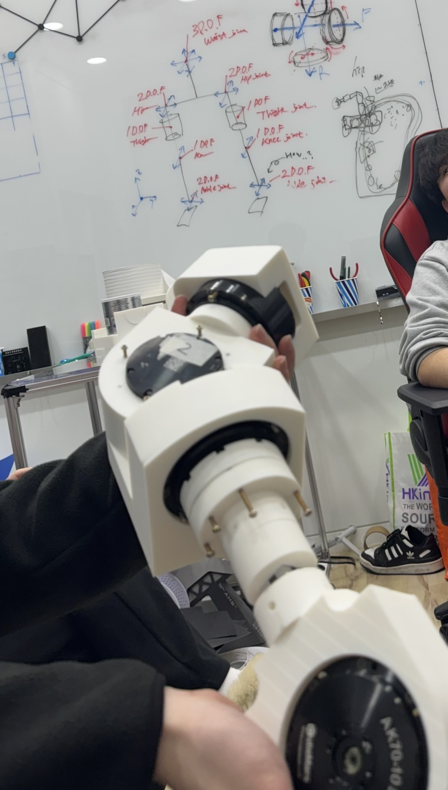

STEP 01
하드웨어 초기 검증 (Prototype)
[ PROBLEM ] 다관절 기구적 설계 결함 감지 및 치수 확인
불가
[ FAILURE ] 시각적 CAD만 의존 시 모터 간
간섭 및 충돌 등 하드웨어 사고 우려
[ FIX ] 저비용 3D 프린팅으로 1차 프로토타입
출력 및 실물 가조립 평가
[ RECORD_LOG ]
초기 설계 단계에서 부품 간섭과 모터 체결 부위를 파악하기 위해, 프로토타입 다리 관절을 3D 프린터로 대충 출력하여 물리적 치수와 역학적 구동 범위를 1차 검증했습니다.

3D Prototype
Dimension Check